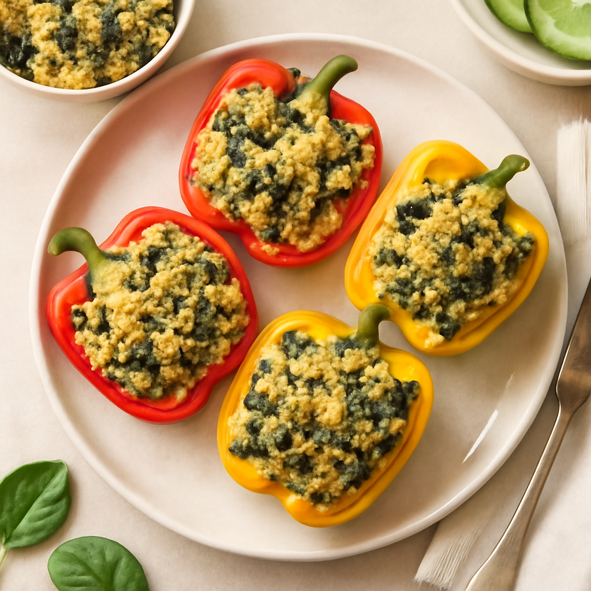

Wednesday — Quinoa & Spinach Stuffed Peppers

Cook Time:
30 minutes
Method:
Oven
vegetarian
quick
stuffed peppers
Ingredients for 6
6 bell peppers, halved
3 cups cooked quinoa
2 cups fresh spinach, chopped
1 cup marinara sauce
1 tsp Italian seasoning
1/2 cup shredded cheese (optional)
Instructions
Preheat oven to 375°F (190°C).
In a bowl, mix quinoa, spinach, marinara sauce, and seasoning.
Fill bell pepper halves with the mixture. Top with cheese if desired.
Place stuffed peppers in a baking dish and bake for 20-25 minutes.
Toddler Notes
Ensure filling is soft and easy to chew; cut into smaller pieces as needed.
Serve without cheese for toddlers if preferred.
← Back to weekly plan